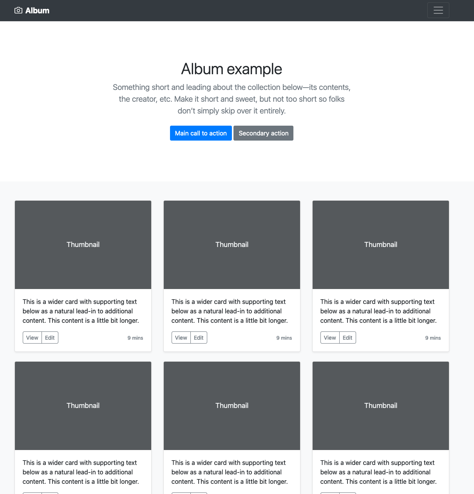
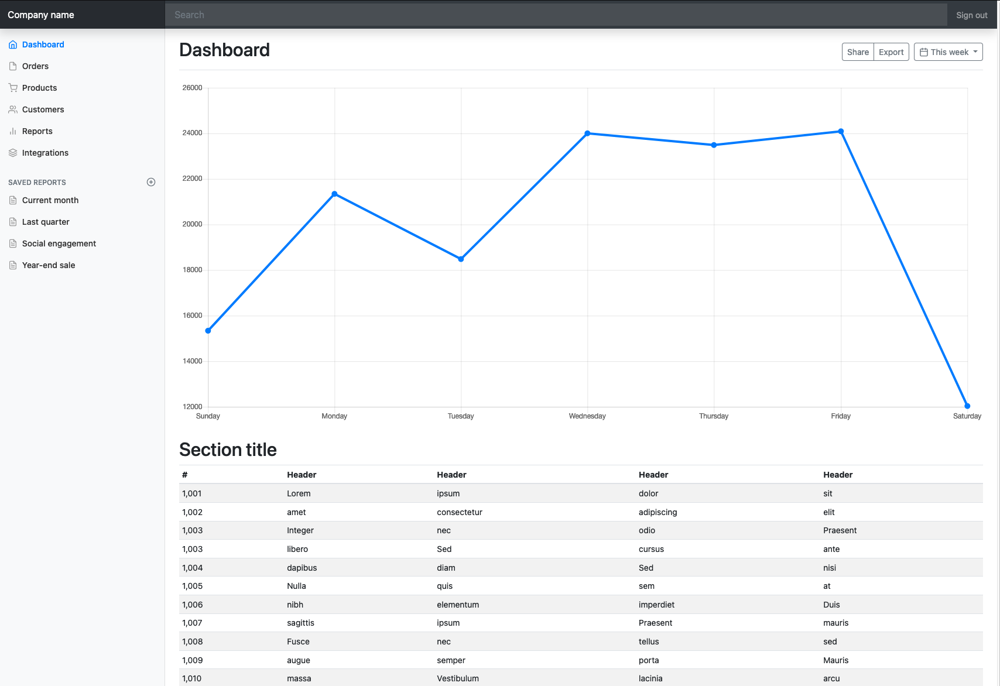

Introduction to Ag Informatics
Module 5, Lecture 1Ankita Raturi, ankita@purdue.edu
Fall 2021
Outline for Today
- User Interfaces 101
- Paper Prototyping
- Intro to Bootstrap
Types of User Interfaces
- Command Line Interface (CLI)
- Graphical User Interface (GUI)
- Natural Language Inteface (NLI)
Command Line Interface (CLI)
Example: DayCent, a biogeochemical model used in agroecosystem simulation (e.g., nitrogen leaching, soil organic carbon, etc.)
- CLI DESIGN CONSIDERATIONS:
- Linear program flow. How to manage decision logic?
- Provide user with options via arguments OR text-based menus
- Good documentation is key!
DayCent example, https://www2.nrel.colostate.edu/projects/daycent-downloads.html
Natural Language Interface (NLI)
Example: Wolfram Alpha
More Wolfram agriculture examples...
- NLI DESIGN CONSIDERATIONS:
- Are there appropriate algorithms to parse user inputs?
- What is the breadth of possible inputs?
- Mode of user input: voice vs text.
- Good training data is key!
Wolfram Alpha example, https://www.wolframalpha.com/input/?i=what+is+the+total+acreage+of+farmland+in+the+US
Graphical User Interface (GUI)
Interaction Styles:
1. Form Fillin, 2. Menu Selection, 3. Direct Manipulation.
Learn more about interaction styles: https://www.interaction-design.org/literature/book/the-glossary-of-human-computer-interaction/interaction-styles
GUI Design: Mobile vs Web
GUI Anatomy: Web Page
GUI Anatomy: Mobile App
User Interface Components
- Input controls: buttons, text-fields, checkboxes, radio buttons, dropdown lists, list boxes, toggles, date field
- Navigational components: breadcrumbs, sliders, search fields, pagination, tags, icons
- Information components: tooltips, icons, progress bars, notifications, message boxes, modal windows
- Containers: accordions, sliders, tables, galleries, cards
Learn more: https://www.usability.gov/how-to-and-tools/methods/user-interface-elements.html
User Interface Frameworks
Bootstrap!
An open source collection of prebuilt, configurable, user interface components and page layouts. Think lego.
What does it contain?
Bootstrap UI Kit
Bootstrap UI Kit
Paper Prototyping


Activity: Paper Prototyping LITE
Individually
Consider your ACRE Farm Management Django App (Lab 4)
- What is a missing feature that the farm manager/workers might desire?
- What might the interface for this feature look like?
- Keep in mind the Bootstrap components and UI elements.
Create an "interactive" paper prototype for your new functionality.
Activity: Paper Prototyping LITE
In PAIRS
Test each others "prototype"
- What constuctive feedback can you provide?
- What worked, what didn't?
Next: Bootstrap + Django
Homework
Thursday's lecture is live web lecture and will include a case study. Lab this week will include time for you finish last module's work, because....
Project Part II is coming Thursday!
- Lab 5 will be a minor addition (views) onto Lab 4. To be released on Monday.
- The quiz is due *next* Friday @ 5pm
https://purdue.brightspace.com
Questions?
License
- Attribution Recommendation: Introduction to Agricultural Informatics Course", Ankita Raturi, Purdue University, 2021. Available at https://github.com/ag-informatics/ag-informatics-course. Licensed by CC BY-NC-SA 4.0.

This course is licensed under a Creative Commons Attribution-NonCommercial-ShareAlike 4.0 International (CC BY-NC-SA 4.0) license. This is a human-readable summary of (and not a substitute for) the license. Official translations of this license are available in other languages.
You are free to:
- Share — copy and redistribute the material in any medium or format
- Adapt — remix, transform, and build upon the material
Under the following terms:
- Attribution — You must give appropriate credit, provide a link to the license, and indicate if changes were made. You may do so in any reasonable manner, but not in any way that suggests the licensor endorses you or your use.
- NonCommercial — You may not use the material for commercial purposes.
- ShareAlike — If you remix, transform, or build upon the material, you must distribute your contributions under the same license as the original.
- No additional restrictions — You may not apply legal terms or technological measures that legally restrict others from doing anything the license permits.